## WasmEdge's yolo-rs #### WASI, Computer Vision and Rust
## Intro - Charles Schleich - Engineer (sometimes) - Distributed Systems - Rust - WASM
#### Context - Runtime for Wasm Binaries - Lightweight + performant - Written in C++ - Rust SDK - Extensible (Plugin System)
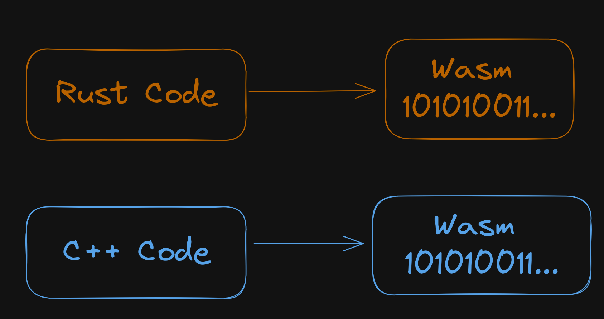
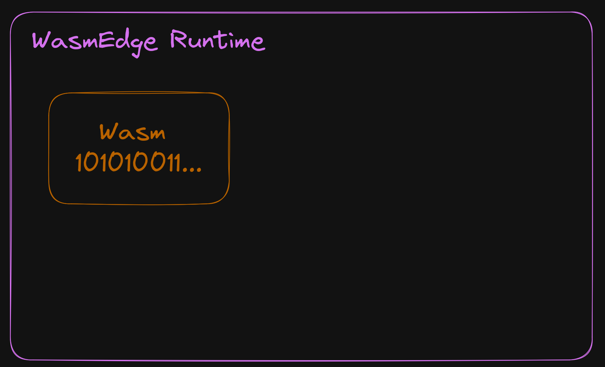
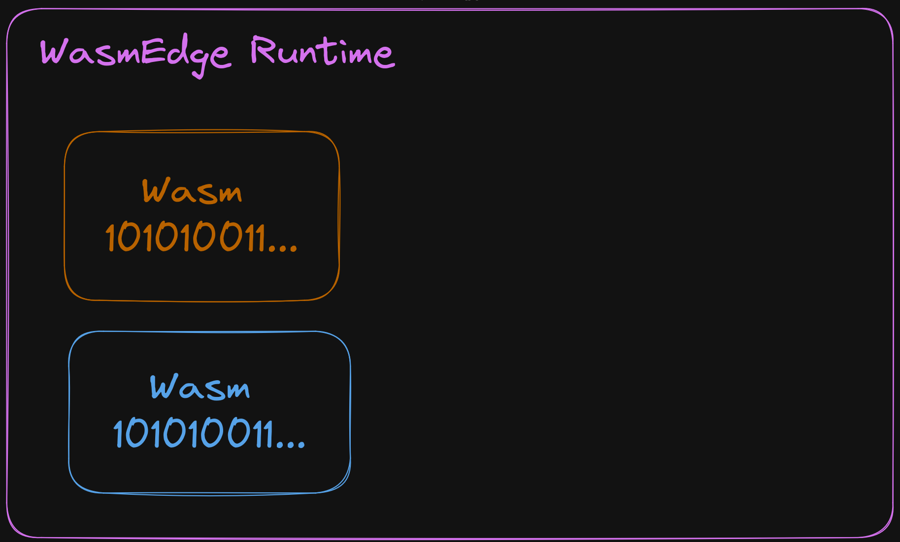
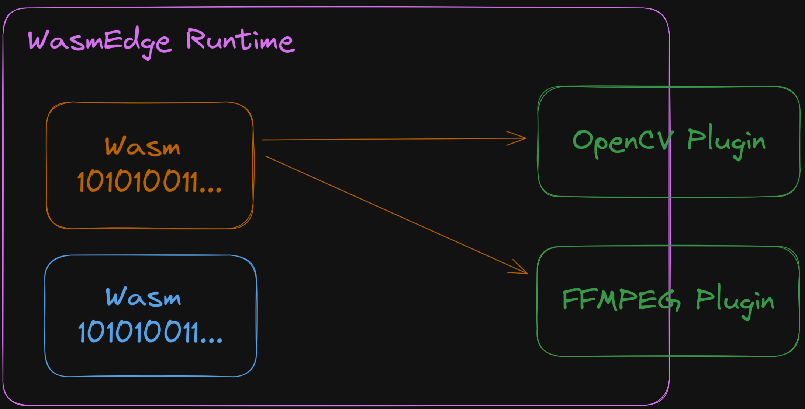
WasmEdge YOLO-rs
## Context - Second State - Michael Yuan - The Linux Foundation (CNCF) - Open Source Project WasmEdge - Computer Vision + Rust
A Rust crate for the YOLO family of object detection models
### Scope - Pre processing - No Neural Nets - Only load the weights - Post processing - Image support - Video support
### Project Structure: - WASM Dev SDK - WasmEdge : Video Processing Plugin - FFMPEG - Backbone of Open Source AV Proc
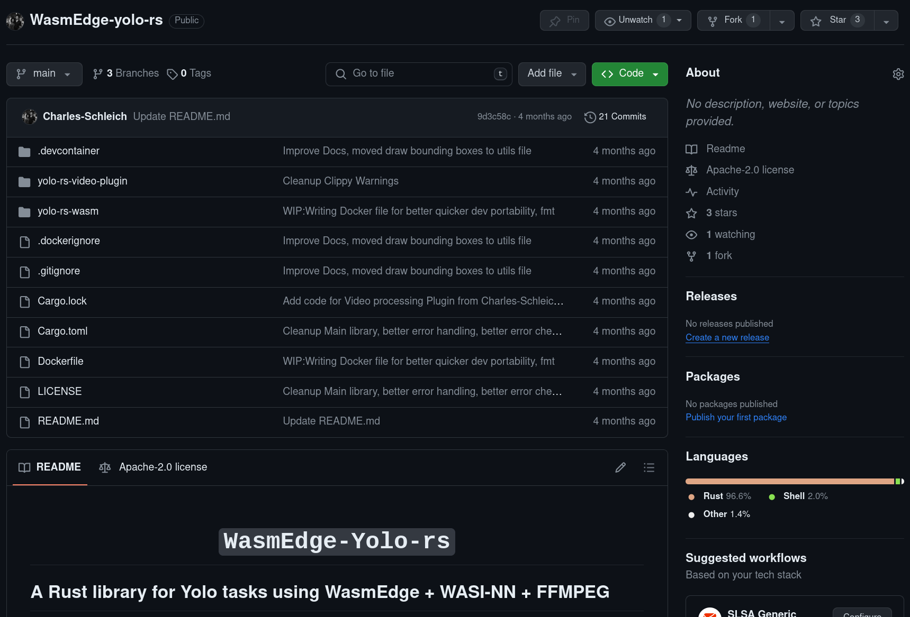
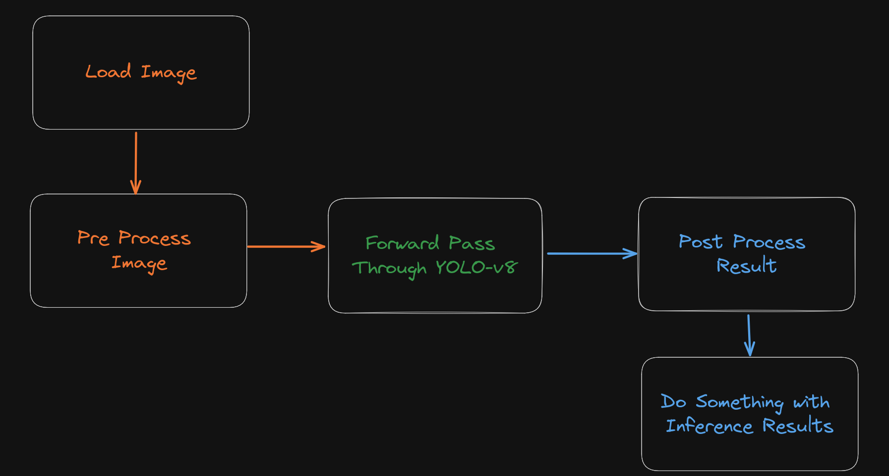
Pre-Processing
### Neural Network Expects Shape - Load Image - Resize to fit 640 x 640 - maintain aspect ratio - Flatten Single list of `f32`
S-tier battlestation
Courtesy of Reddit user u/NguyenDees
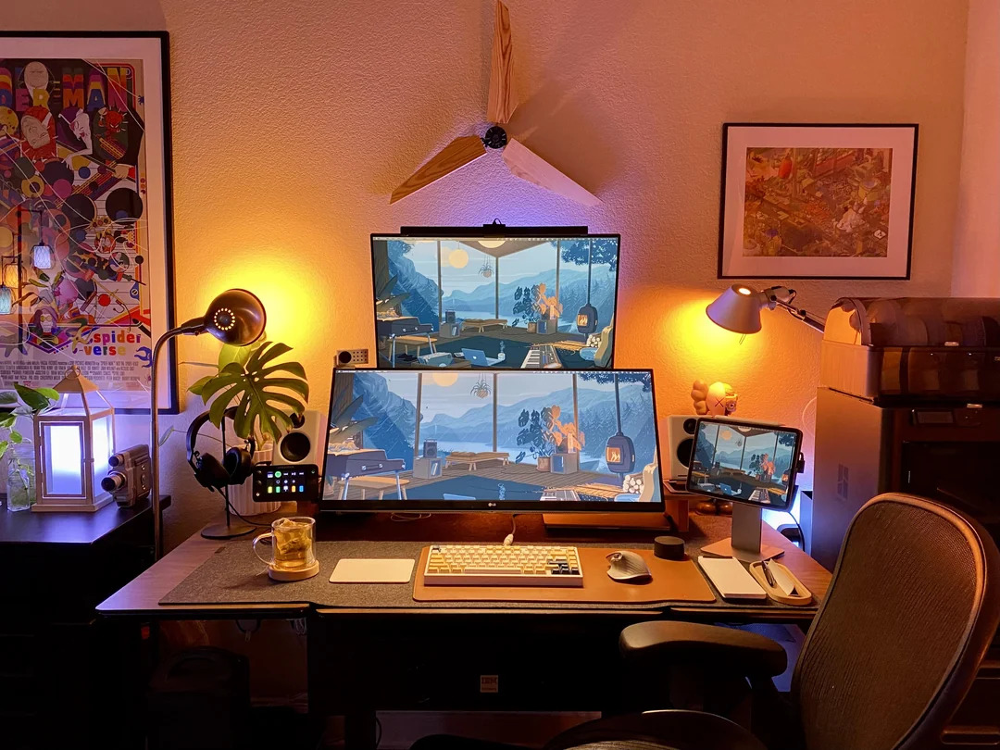
Resize to 640 to 640
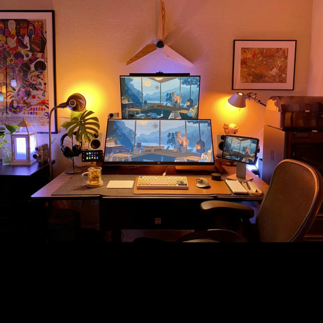
Split into channels
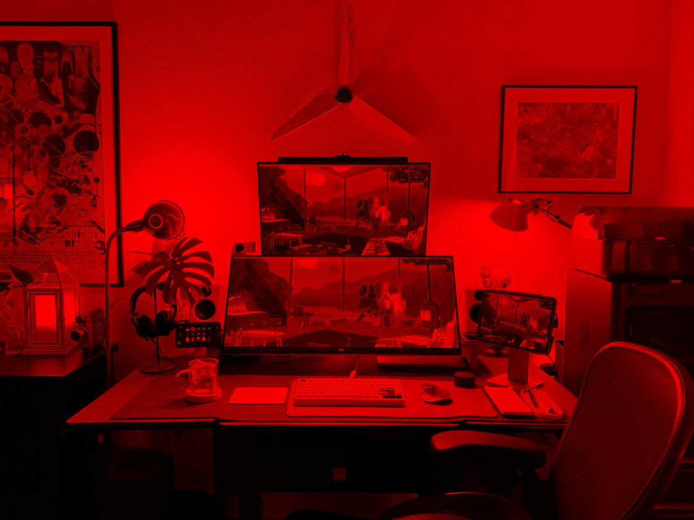
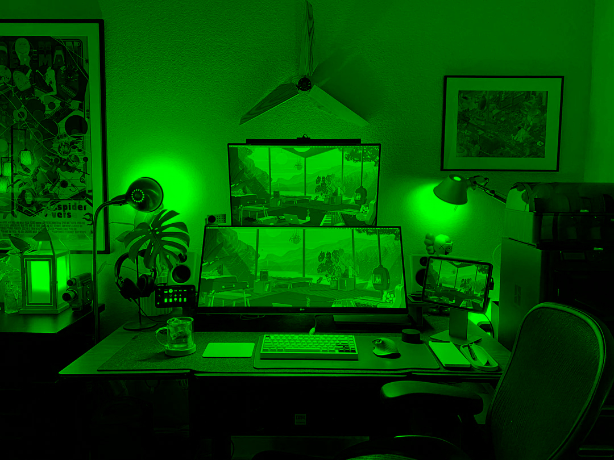
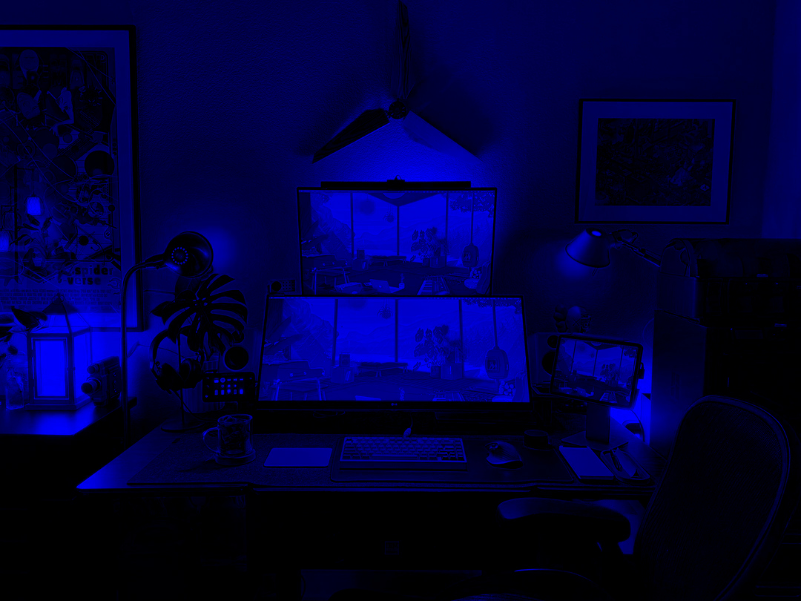
Split into channels
01101000 01110100 01110100 01110000 01110011
00111010 00101111 00101111 01110111 01110111
01110111 00101110 01111001 01101111 01110101
01110100 01110101 01100010 01100101 00101110
01100011 01101111 01101101 00101111 01110111
01100001 01110100 01100011 01101000 00111111
01110110 00111101 01100100 01010001 01110111
00110100 01110111 00111001 01010111 01100111
01011000 01100011 01010001 00100000 00100000
Convert to f32
f32 f32 f32 f32 ...
f32 f32 f32 f32 ...
f32 f32 f32 f32 ...
Flatten to a single buffer to f32
f32 f32 f32 f32 ...
f32 f32 f32 f32 ...
f32 f32 f32 f32 ...
The Code
Now we can pass this to our Neural Network
Wasm Edge NN processing
```rust // wasi-nn = "0.6.0" use wasi_nn::{ExecutionTarget, Graph, GraphEncoding}; let model_file : Vec<&[u8]> = std::fs::read(model_file); let graph = GraphBuilder::new( GraphEncoding::Pytorch, ExecutionTarget::CPU) .build_from_files([model_file]) .unwrap(); ```
```rust pub enum GraphEncoding { pub enum ExecutionTarget { Openvino, CPU, Onnx, GPU, Tensorflow, TPU, Pytorch, AUTO, TensorflowLite, } Autodetec, // safe tensors when ? } ```
The Code
Post processing
### Post Proc Pipeline - `out Vec<f32> -> [(detections, classes, position)]` - Filter : Non-maximum suppression (NMS) - Reduce : Intersection over Union (IoU) - [(detections, classes, position)]
### Output from Neural Network - `out_buf: Vec<f32>` - `(OBJECTS, CLASSES)` - `OBJECTS : 8400` - `CLASSES : 80` - `x,y,w,h : +4`
Buf to 2D array
2D Detection Array
Apply NMS
Repo
Apply IOU
### Vectorized IOU - Piotr Skalski - TLDR: Matrix multiplication - https://blog.roboflow.com/how-to-code-non-maximum-suppression-nms-in-plain-numpy/
Vectorized IOU - Piotr Skalski
Output
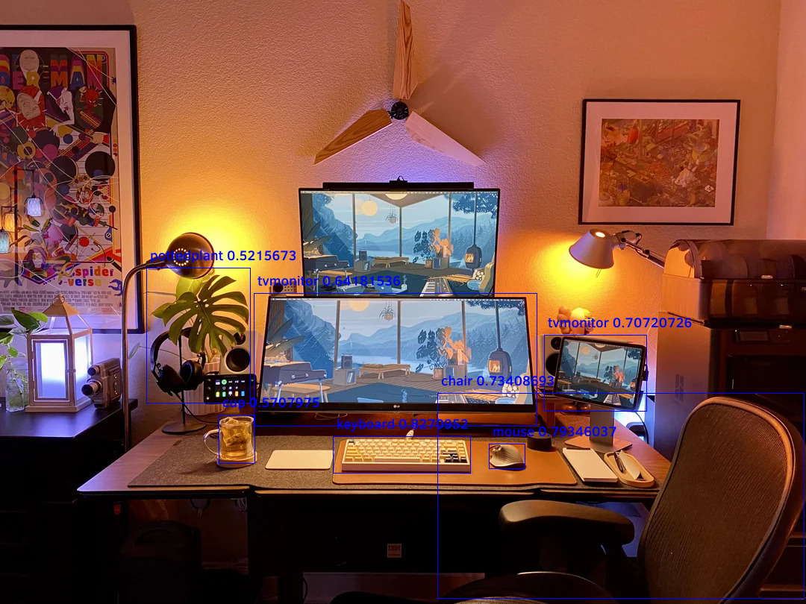
WasmEdge - Plugin Interface
Interface code
Video Example
Video Proc Plugin : FFMPEG
Fast Forward Moving Picture Experts Group
Decode Video - Load Video File - Process Encoded Packets -> RBG Frames - Expose All Frames to WASM Application - Inference - Returns frames with bounding box
Re-Encode Video - RBG Frames -> Packets -> Write Packets to Disc - Important - I Frames vs B Frames - Packets - Bit rate - FFMPEG Version : 4.4.2-0ubuntu0.22.04.1 - Using NVenc under the hood (3070)
Learnings And Limitations - Broadcasting of Arrays - FFMPEG : I Frame vs B Frame - Nvidia - NVenc - FFMPEG : Latest Version
TODO - Finish Dockerizing - FFMPEG - Improve Re-encoding - FFMPEG - Move to Latest Version - Profile performance and improve
Future work - Better interface for passing types - WebRTC Plugin for streaming video - Design review